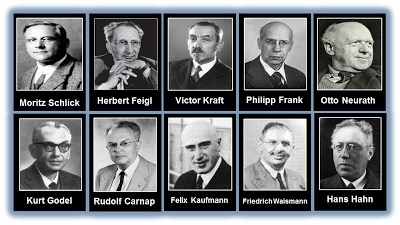
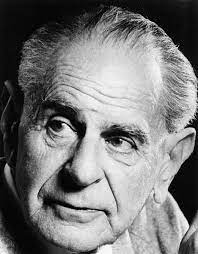

EPISTEMOLOIGA
Noções gerais sobre a revisão epistemológica

Após a revolução científica no século XVII, que evidenciou a razão humana como
construtora e legisladora do conhecimento, sobretudo apoiado na ideia baconiana do
método científico, a ciência se consolidou como o artifício mais seguro para aquisição de
conhecimento e para o progresso da humanidade. Exemplo disso foram as teses
científicas desenvolvidas por Galileu, Newton, Kepler e outros vários intelectuais que, do
século XVII ao XIX, reafirmaram, de maneira teórica e prática, a ideia de que as ciências
eram de suma importância para a construção de paradigmas interpretativos do mundo. No entanto, na passagem do século XIX para o século XX, uma série de valores
científicos e propriamente os métodos utilizados na geometria, física, astronomia, física
social, passam a ser refutados por novas experimentações e visões de mundo.
Na geometria, por exemplo, a geometria não-euclidiana, formulada em grande parte pelo
matemático russo Nikolai Lobachevsky (1792-1856), pôs em cheque as tradicionais
formas geométricas que serviam de base científica e interpretação do mundo. Na Física,
Albert Einstein (1879-1955) dá o pontapé para a junção das noções de espaço e tempo,
em sua teoria da relatividade. Mais tarde, Werner Heisenberg (1901-1976) amplia ainda
mais as noções físicas com o princípio da incerteza, elaborada diante uma visão
absolutamente nova, que rompia com os paradigmas da física clássica: a mecânica
quântica. Ainda mais recentemente, no campo da astronomia, o Telescópio Espacial
Hubble tornou possível o que antes era improvável: estudar com enorme riqueza de
detalhes o universo para além da nossa galáxia, dando a prova científica da vastidão do
universo.
Esses exemplos podem ser estudados em suas respectivas ciências e áreas de estudos. O
que cabe ressaltar aqui é a reviravolta que o mundo do conhecimento científico teve nos
séculos XIX e XX. Desse modo, se antes a ciência precisava confrontar os dogmas
religiosos enraizados nas concepções metafísicas de mundo, agora a ciência confrontava
ela mesma, o que tornou necessária uma revisão epistemológica (revisão no método
científico), que passaremos a ver, começando pelo positivismo lógico e as
importantíssimas considerações de Karl Popper.
CÍRCULO DE VIENA E KARL POPPER
Verificacionismo e falseabilidade

Na década de 1920, um movimento intelectual buscou resgatar os valores científicos,
haja vista estes estarem em plena crise. O Círculo de Viena (neopositivismo, empirismo
lógico, positivismo lógico), que contou com intelectuais famosos, como Moritz Schilick
(1882-1936) e Rudolf Carnap (1891-1970), buscou unir o pensamento empírico
tradicional - voltado à experimentação de fenômenos visando a ciência - à lógica
simbólica que se evidenciava naquele período.
Propunham, com isso, um verificacionismo como método próprio das ciências.
Basicamente, o método consiste num procedimento finito que pudesse colocar em teste,
tanto pela observação quanto pela lógica matemática, os objetos científicos em questão.
(juízos sintéticos a posteriori)
Assim, todo e qualquer conhecimento que não pudesse ser verificado pelo método, não
poderia ser aceito como um problema propriamente científico, por justamente estar
desprovido de base empírica. Questões teológicas, metafísicas e éticas eram pseudo
(falso) problemas justamente por não possuírem base empírica para testes. O que não é
passível de verificação é automaticamente desprovido de sentido. (Exemplo: como
poderíamos testar por meio da observação e da matemática alguma verdade divina?)
Além disso, os neopositivistas pretenderam criar uma linguagem propriamente científica
que pudesse unificar todas as ciências e, portanto, gerar conhecimento com mais
facilidade. Essa pretensão caracteriza um tipo de reducionismo que tornava as
explicações científicas fontes de todo conhecimento seguro.
KARL POPPER (1902-94)
Karl Popper apontou um limite na visão científica destacada pelos neopositivistas, a
saber, a questão do indutivismo ingênuo. Para ele, a experiência nunca poderá oferecer
dados particulares suficientes para construir um conhecimento geral e seguro. Como
exemplo, podemos pensar na confiabilidade frágil que temos na ciência da indústria
farmacêutica. Se uma grande quantidade de pessoas está com dor de cabeça e toma um
remédio X, posso inferir que esse remédio servirá para mim em todos os casos em que eu
apresentar os mesmos sintomas? Certamente não. A medicina estuda também as variáveis
a serem constatadas no nosso organismo, o que significa que uma série de fatores podem
fazer com que X não funcione exatamente como costuma funcionar. Ou seja, eu não
posso inferir toda vez um resultado só porque os fenômenos percebidos apresentam uma
regularidade.
Diante dessa "fragilidade" do indutivismo (que ainda e sem dúvida serve para a ciência
como um todo) K. Popper propõe a substituição do verificacionismo pelo
falsificacionismo, também chamado de teoria da falseabilidade ou refutabilidade. Esta
teoria consiste basicamente na tentativa de submeter uma teoria científica a testes,
buscando falseá-la ou refutá-la, em vez de, como propunham os neopositivistas,
confirmá-las. Assim, a falseabilidade não serve para provar que uma teoria científica é
verdadeira, mas para testar sua resistência à falsificação (refutação). Caso resista, a
teoria, ainda assim, não poderá ser confirmada como absolutamente e universalmente
verdadeira. Esse processo é feito por meio do método hipotético-dedutivo
Grosso modo, o método funciona da seguinte maneira: Apresentação dos problemas -
levantamento de hipóteses - experimentação (busca falsificar a hipótese) - uma lei
corroborada resultante do processo. O que restou do processo, em vez de aceito como
verdade, é apenas uma teoria conjectural, provisória e transitória. Representado e
simplificado por Popper da seguinte forma: Problema 1; teoria teste; eliminação do
erro; problema 2. (P1 - TT - EE - P2)
Para exemplificar, podemos pensar justamente os exemplos supracitados. No caso das
astronomia, no século XVI, "o astrônomo polonês Nicolaus Copernicus trocou a visão
tradicional do movimento planetário centrado na Terra por um em que o Sol está no
centro e os planetas giram em torno deste em órbitas circulares. Embora o modelo de
Copérnico estivesse muito próximo de predizer o movimento planetário corretamente,
existiam discrepâncias"1. Estas discrepâncias significam justamente o que aqui
entendemos como limite da indução para as ciências. Os resultados de Copérnico não
poderiam ser concebidos como absolutamente corretos somente porque refutavam de
maneira criteriosa e científica, pois aqui entendemos justamente que ciência não emite
verdades absolutas, mas provisórias.
Prova disso é que logo em seguida o astrônomo dinamarquês Tycho Brahe observou com
grande precisão o planeta Marte, e seus estudos geraram o que, em Kepler, conhecemos
como movimento elíptico. Seguindo a lógica científica, é de se presumir que os estudos
de Kepler não encerram as discussões sobre movimentos, física, astronomia etc. Temos
Newton, Einstein e assim por diante. Eis a característica mais típica das ciências,
conforme vemos em Karl Popper, na obra "Lógica da pesquisa científica": as verdades
científicas são conjecturais, pois é justamente no erro que as ciências evoluem.
Voltando ao modo como o método hipotético-dedutivo funciona, é importante saber que
os fenômenos biológicos, químicos, matemáticos são deduzíveis através de hipóteses, ou
seja, podem ser testados não só empiricamente, mas também de forma lógica. Assim,
Popper vê na dedução, e não propriamente na indução simplista (generalização), o
fundamento do método. A observação que se pode fazer dos astros celestes não é
suficiente para testar qualquer teoria astronômica que se apresente, mas o que faz essa teoria "testável" ou mesmo refutável é justamente a possibilidade de também calcular
(dedução), por meio de uma linguagem matemática, a disposição e distância dos astros
celestes. Por esse motivo, aquelas ciências que não se apresentam de forma que podem
ser deduzidas suas hipóteses com a finalidade de teste (falseabilidade), não podem ser
consideradas propriamente científicas. Esta diferença é denominada como ciência e
pseudo ciência.
- Ciência: conta com uma base empírica calculável para passar pela falseabilidade
(falsificacionismo). Conta, portanto, com a possibilidade do erro. E se resiste ao
erro, se aproxima cada vez mais da verdade, mas nunca definitivamente.
Exemplos: física newtoniana, teoria da relatividade geral e Astronomia.
- Pseudo Ciência: Não possui base empírica calculável e falseável. Não assume a
possibilidade do erro. Exemplo: a psicanálise costuma emitir diagnósticos muito
gerais, o que não permite refutação. Como, por exemplo, afirmar que tensões
específicas típicas da vida adulta são resultantes de pendências do passado,
quando criança. Embora possa fazer algum sentido e eventualmente possa até ser
acertado, não dispõe de dados suficientes para que seja refutada, o que não faz
desse diagnóstico algo propriamente científico